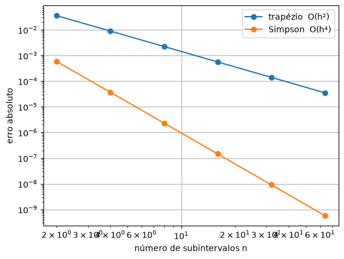

12. Trapézio e Simpson¶
A integral soma uma grandeza que muda continuamente. A distância percorrida é a integral da velocidade; a energia consumida é a integral da potência; a exposição de um paciente a um remédio é a integral da concentração no sangue; a área de um terreno é a integral da largura dele. Em todos esses casos, a integral é a área sob uma curva.
No cálculo, integrar é achar uma primitiva. Mas muitas funções importantes não têm primitiva escrita com funções conhecidas (a curva normal da estatística é o exemplo mais famoso), e muitas nem são fórmulas: são tabelas de medições. Os métodos deste capítulo fazem o que se fazia antes das calculadoras: cortam a área em fatias finas e somam as fatias.
A área sob a curva¶
🌍 Contexto: a curva normal
Muitas medições (a altura de pessoas, o erro de um instrumento, o ruído de um sinal) se espalham em torno da média segundo a curva normal, \(\varphi(z) = \dfrac{1}{\sqrt{2\pi}}\,e^{-z^2/2}\). A probabilidade de uma medição cair a menos de um desvio-padrão da média é a área sob essa curva entre \(-1\) e \(1\). Essa integral não tem fórmula: as tabelas de probabilidade dos livros de estatística foram calculadas numericamente.
No quadro: a regra do trapézio¶
🧑🏫 No quadro — a regra do trapézio
1. Divida \([a, b]\) em \(n\) faixas de largura \(h = (b - a)/n\), com os pontos \(x_0 = a, x_1, \ldots, x_n = b\) e os valores \(y_i = f(x_i)\).
2. Em cada faixa, troque a curva pela reta entre os dois pontos. A área é a de um trapézio: \(\dfrac{h}{2}(y_i + y_{i+1})\).
3. Somando todas as faixas, cada ponto do meio aparece em duas faixas (é o lado direito de uma e o esquerdo da seguinte), e as pontas aparecem uma vez só:
4. O erro de cada faixa vem da curvatura que a reta ignora. No total, ele é proporcional a \(h^2\): com \(n\) dobrado, o erro cai 4 vezes.
# Estatistica: a probabilidade de uma medida cair a menos de um desvio-padrao
# da media e a area sob a curva normal entre -1 e 1. Essa integral nao tem
# formula por funcoes elementares: e o exemplo classico de integral numerica.
import numpy as np
def normal(z):
return np.exp(-z**2 / 2) / np.sqrt(2 * np.pi)
a, b = -1.0, 1.0
for n in [2, 4, 8, 16]:
h = (b - a) / n
x = np.linspace(a, b, n + 1)
y = normal(x)
soma_meio = 0.0
for i in range(1, n):
soma_meio = soma_meio + y[i]
area = h / 2 * (y[0] + 2 * soma_meio + y[n])
print(f"trapezio com n = {n:2d}: {area:.6f}")
print("valor de referencia: 0.682689")
trapezio com n = 2: 0.640913
trapezio com n = 4: 0.672522
trapezio com n = 8: 0.680164
trapezio com n = 16: 0.682059
valor de referencia: 0.682689
Com 16 faixas, a probabilidade sai com 3 casas certas: 68,2 %. É a famosa "regra dos 68 %" da estatística.
No quadro: a regra de Simpson¶
🧑🏫 No quadro — a regra de Simpson 1/3
1. Em vez de uma reta por dois pontos, use uma parábola por três pontos vizinhos: ela acompanha a curvatura.
2. Integrando a parábola que passa por \((x_0, y_0)\), \((x_1, y_1)\) e \((x_2, y_2)\) (o polinômio interpolador do capítulo 10), sai uma conta simples:
O ponto do meio pesa 4 vezes mais que as pontas.
3. Emendando parábolas de duas em duas faixas (por isso \(n\) precisa ser par), os pontos ímpares pesam 4, os pares do meio pesam 2 (são ponta de duas parábolas) e as pontas pesam 1:
4. O erro é proporcional a \(h^4\): com \(n\) dobrado, cai 16 vezes.
Para separar os pontos ímpares dos pares, o código usa uma fatia com passo.
🧰 Python: fatia com passo
A fatia y[inicio:fim:passo] pega de passo em passo. y[1:-1:2] começa na
posição 1, vai de 2 em 2 e para antes da última: são os pontos ímpares do meio.
y[2:-1:2] são os pares do meio. Funciona igual em listas e em arrays.
# Simpson 1/3: parabolas por tres pontos em vez de retas por dois.
# Pesos h/3 * (1, 4, 2, 4, 2, ..., 4, 1); n precisa ser PAR.
import numpy as np
def normal(z):
return np.exp(-z**2 / 2) / np.sqrt(2 * np.pi)
a, b = -1.0, 1.0
for n in [2, 4, 8, 16]:
h = (b - a) / n
x = np.linspace(a, b, n + 1)
y = normal(x)
impares = np.sum(y[1:-1:2]) # posicoes 1, 3, 5, ... (peso 4)
pares = np.sum(y[2:-1:2]) # posicoes 2, 4, 6, ... (peso 2)
area = h / 3 * (y[0] + 4 * impares + 2 * pares + y[n])
print(f"Simpson com n = {n:2d}: {area:.6f}")
print("valor de referencia: 0.682689")
Simpson com n = 2: 0.693237
Simpson com n = 4: 0.683058
Simpson com n = 8: 0.682711
Simpson com n = 16: 0.682691
valor de referencia: 0.682689
Com 8 faixas, Simpson já tem a precisão que o trapézio não alcança com 16. Com 16, acerta a quinta casa decimal.
A ordem do erro¶
Como no capítulo 2, a ordem de cada método se vê dobrando \(n\) e medindo quanto o erro cai. A função é \(e^x\) em \([0, 1]\), cuja integral exata é \(e - 1\).
# O erro de cada regra quando n dobra (h cai pela metade).
import numpy as np
import matplotlib.pyplot as plt
def f(x):
return np.exp(x)
a, b = 0.0, 1.0
exato = np.exp(1) - 1
def trapezio(f, a, b, n):
h = (b - a) / n
y = f(np.linspace(a, b, n + 1))
return h / 2 * (y[0] + 2 * np.sum(y[1:-1]) + y[-1])
def simpson(f, a, b, n):
h = (b - a) / n
y = f(np.linspace(a, b, n + 1))
return h / 3 * (y[0] + 4 * np.sum(y[1:-1:2]) + 2 * np.sum(y[2:-1:2]) + y[-1])
ns = [2, 4, 8, 16, 32, 64]
erros_t = []
erros_s = []
for n in ns:
erros_t.append(abs(trapezio(f, a, b, n) - exato))
erros_s.append(abs(simpson(f, a, b, n) - exato))
for k in range(1, len(ns)):
print(f"n = {ns[k]:2d}: trapezio caiu {erros_t[k - 1] / erros_t[k]:5.2f}x, "
f"Simpson caiu {erros_s[k - 1] / erros_s[k]:6.2f}x")
plt.figure()
plt.loglog(ns, erros_t, "o-", label="trapézio O(h²)")
plt.loglog(ns, erros_s, "o-", label="Simpson O(h⁴)")
plt.xlabel("número de subintervalos n")
plt.ylabel("erro absoluto")
plt.grid()
plt.legend()
plt.show()
n = 4: trapezio caiu 3.99x, Simpson caiu 15.65x
n = 8: trapezio caiu 4.00x, Simpson caiu 15.91x
n = 16: trapezio caiu 4.00x, Simpson caiu 15.98x
n = 32: trapezio caiu 4.00x, Simpson caiu 15.99x
n = 64: trapezio caiu 4.00x, Simpson caiu 16.00x

O trapézio cai 4 vezes (\(2^2\)) e Simpson, 16 vezes (\(2^4\)), exatamente como o quadro previu. Com 64 faixas, Simpson erra na décima casa decimal. Com o mesmo número de avaliações da função, é uma precisão que o trapézio só alcançaria com dezenas de milhares de faixas.
Quando Simpson dá errado¶
# Quebre o metodo: Simpson com n IMPAR.
import numpy as np
def simpson(f, a, b, n):
h = (b - a) / n
y = f(np.linspace(a, b, n + 1))
return h / 3 * (y[0] + 4 * np.sum(y[1:-1:2]) + 2 * np.sum(y[2:-1:2]) + y[-1])
exato = np.exp(1) - 1
for n in [4, 5, 6, 7]:
print(f"n = {n}: Simpson = {simpson(np.exp, 0, 1, n):.6f} erro = {abs(simpson(np.exp, 0, 1, n) - exato):.1e}")
n = 4: Simpson = 1.718319 erro = 3.7e-05
n = 5: Simpson = 1.555140 erro = 1.6e-01
n = 6: Simpson = 1.718289 erro = 7.3e-06
n = 7: Simpson = 1.598074 erro = 1.2e-01
💥 Quebre o método
Com \(n\) ímpar, as parábolas não se emendam: sobra uma faixa sem par, e a fórmula dos pesos (1, 4, 2, ..., 4, 1) conta pontos com o peso errado. O resultado erra por 16 %, e o programa não reclama. Antes de usar Simpson, confira que o número de faixas é par (o número de pontos, \(n + 1\), é ímpar). Com uma quantidade ímpar de faixas, use o trapézio, ou Simpson nas primeiras faixas e o trapézio na última.
Confira com a biblioteca¶
🧰 Comando novo: from scipy.integrate import quad
quad(f, a, b) calcula \(\int_a^b f(x)\,dx\) com um método adaptativo (que põe
mais pontos onde a função muda mais). Ele devolve dois números: o valor da
integral e uma estimativa do erro. Por isso a chamada tem dois nomes antes do
=: valor, erro = quad(f, a, b).
# Confira com a biblioteca.
import numpy as np
from scipy.integrate import quad
def normal(z):
return np.exp(-z**2 / 2) / np.sqrt(2 * np.pi)
valor, erro_estimado = quad(normal, -1, 1)
print(f"quad: {valor:.10f} (erro estimado pela biblioteca: {erro_estimado:.1e})")
Mesmo método, outra área¶
🌍 Contexto: a área de um terreno
Um topógrafo não tem a fórmula do contorno de um terreno. Ele estica uma linha de base e mede, a cada 10 metros, a largura do terreno perpendicular a ela. A área é a integral da largura ao longo da base, calculada a partir da tabela.
# Mesmo metodo, outra area: topografia. A largura de um terreno irregular foi
# medida a cada 10 m ao longo de uma linha de base. Qual a area?
import numpy as np
largura = np.array([0.0, 12.4, 18.9, 22.1, 25.6, 24.0, 19.8, 15.2, 0.0]) # metros
h = 10.0 # metros
n = len(largura) - 1 # 8 trechos
trap = h / 2 * (largura[0] + 2 * np.sum(largura[1:-1]) + largura[-1])
simp = h / 3 * (largura[0] + 4 * np.sum(largura[1:-1:2]) + 2 * np.sum(largura[2:-1:2]) + largura[-1])
print(f"area pelo trapezio: {trap:.1f} m²")
print(f"area por Simpson: {simp:.1f} m²")
O mesmo código que calculou uma probabilidade calcula a área do terreno; a única diferença é que os \(y_i\) vêm de uma trena, e não de uma fórmula. Os dois resultados diferem em 2 %: com pontos tão espaçados, a curvatura do contorno pesa, e Simpson, que a acompanha, é o mais confiável.
Erros comuns deste capítulo¶
| Sintoma | Causa provável |
|---|---|
| a integral dá quase o dobro do certo | faltou dividir por 2 no trapézio (ou por 3 no Simpson) |
| a integral dá um pouco menos que o certo, e não melhora | as pontas foram multiplicadas por 2 junto com o meio: elas pesam 1 |
| Simpson erra muito | \(n\) ímpar: o número de faixas precisa ser par |
h errado |
\(h = (b - a)/n\), com \(n\) faixas e \(n + 1\) pontos; confundir faixas com pontos é o erro mais comum |
TypeError no quad |
ele recebe a função (f), e não os valores (f(x)) |
Onde isso é usado de verdade¶
- Farmacologia: a "área sob a curva" (AUC) da concentração de um remédio no sangue mede a exposição do paciente e decide se um genérico é equivalente ao de referência. É calculada pela regra do trapézio sobre as coletas de sangue.
- Estatística: tabelas de probabilidade (normal, t de Student, qui-quadrado) e os valores-p dos testes estatísticos.
- Engenharia: energia a partir da potência, carga a partir da corrente, volume a partir de áreas de seção (terraplanagem, capacidade de reservatórios).
- Telecom e processamento de sinais: a energia e a potência média de um sinal são integrais do quadrado da amplitude.
- Topografia e agricultura: área de terrenos e de lavouras a partir de medições de campo.
Resumo¶
- A integral é a área sob a curva; os métodos cortam a área em \(n\) faixas de largura \(h = (b - a)/n\) e somam.
- Trapézio: uma reta por faixa, \(\frac{h}{2}(y_0 + 2\sum y_{\text{meio}} + y_n)\). Erro \(O(h^2)\).
- Simpson 1/3: uma parábola por duas faixas, pesos 1, 4, 2, 4, ..., 4, 1 vezes \(h/3\). Erro \(O(h^4)\). Exige \(n\) par.
- A ordem se confere dobrando \(n\): o erro cai 4× (trapézio) e 16× (Simpson).
- O mesmo código integra uma fórmula ou uma tabela de medições.
Para praticar¶
A Lista 12 começa com trapézio e Simpson à mão (✏️) e segue com as regras como funções, o volume de um reservatório, a energia de um pulso e a escolha do \(n\) para uma precisão desejada.